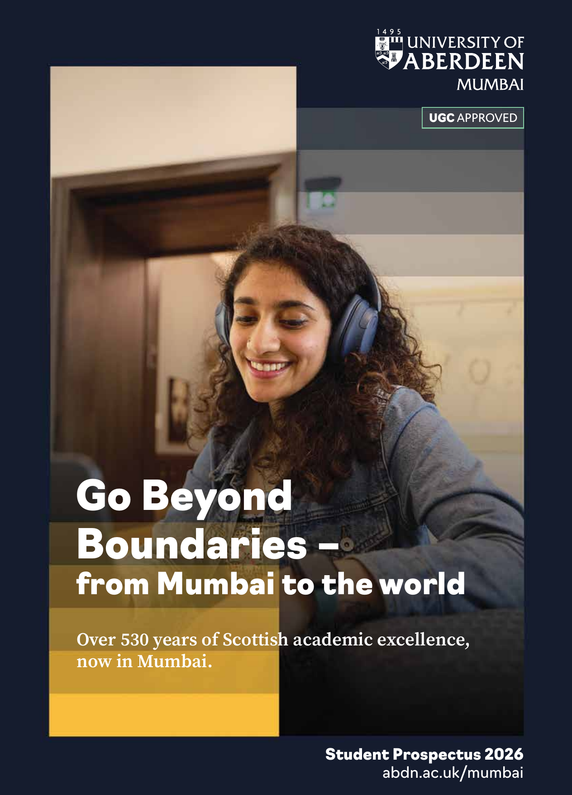

Same Aberdeen curriculum
Programmes mirror the Scotland campus in curriculum, academic standards and learning approach.
University of Aberdeen Mumbai
Earn an Aberdeen degree in Mumbai through the same four-year Honours structure and academic standards as the university's home campus in Scotland.

The Aberdeen advantage
The Mumbai campus combines Aberdeen's historic academic tradition with a modern, industry-connected learning environment in India's financial and innovation capital.
Programmes mirror the Scotland campus in curriculum, academic standards and learning approach.
The four-year undergraduate structure supports interdisciplinary learning, practical work and deeper academic development.
Mumbai connects with Aberdeen's global research culture and Indian partners across computing, data and business.
Internships, live projects, mentoring and professional networks help students build career-ready skills.
Programmes
Four undergraduate Honours degrees and two postgraduate programmes combine academic depth, transferable skills and industry relevance.
Finance, strategy, marketing and organisational change with practical business experience.
Software, AI, machine learning, cybersecurity, blockchain and emerging technologies.
Big data, predictive analytics and AI skills for high-demand careers.
Economic theory, policy and practice in India's financial capital.
Technical foundations and new advances in AI for innovation across industries.
Strategic vision, leadership and global business insight for management, consulting, finance and operations.
Eligibility
These requirements are drawn from the 2026 prospectus. Admissions Edu can review your board, subjects, grades and degree background before you apply.
Fees and funding
The prospectus lists domestic and international tuition for the 2026 intake. Scholarship details and eligibility are communicated during admissions.
| Programme | Domestic students | International students |
|---|---|---|
| All undergraduate programmes | ₹12,00,000/year | ₹13,20,000/year |
| MSc Artificial Intelligence | ₹14,00,000 | ₹15,50,000 |
| MBA | ₹17,00,000 | ₹18,70,000 |
Aberdeen states that scholarships will combine need-based support for low-income households with merit awards for high-achieving students.
Careers and global experience
Career development and applied experience are embedded through individual guidance, workshops, industry engagement and Aberdeen's global community.
Career counselling, CV and interview clinics help students prepare for professional life.
Digital skills, entrepreneurship and leadership support an evolving career journey.
Industry links support internships, live projects, networking and mentoring.
Students join a network of more than 100,000 alumni across 170 countries.
From Mumbai to Aberdeen
Campus and student life
The campus at Chromium, Andheri East combines Grade-A infrastructure, specialist learning spaces and access to Mumbai's business and transport network.
Smart classrooms, specialised labs and a digital learning centre provide access to global resources and technology.
Common areas, faculty spaces and student lounges support group work, conversation and new ideas.
Academic, professional, cultural and creative societies are joined by sports, debates, festivals and hackathons.
Counselling, mentorship, peer support and dedicated welfare processes promote a safe and inclusive environment.
Admissions
Applications receive a holistic review of academic qualifications, English proficiency, supporting documents and suitability for the chosen programme.
Complete the university admissions form and provide the required academic and personal information.
The team reviews transcripts, personal statements and relevant work experience for postgraduate programmes.
Qualified applicants receive an unconditional offer, while applicants awaiting documents or results may receive a conditional offer.
The prospectus states that the application fee is non-refundable. Tuition refunds follow the notified admission deadline: 100% less permitted processing fees at least 15 days before; 90% less than 15 days before; 80% within 15 days after; 50% between 16 and 30 days after; and no refund more than 30 days after.
Eligible refunds are processed to the original payer after a written request and verification. The prospectus gives a 15-30 day processing period. The security deposit is refundable after applicable dues and clearances.
University of Aberdeen Mumbai
Speak with Admissions Edu about programmes, eligibility, fees and your next application step.